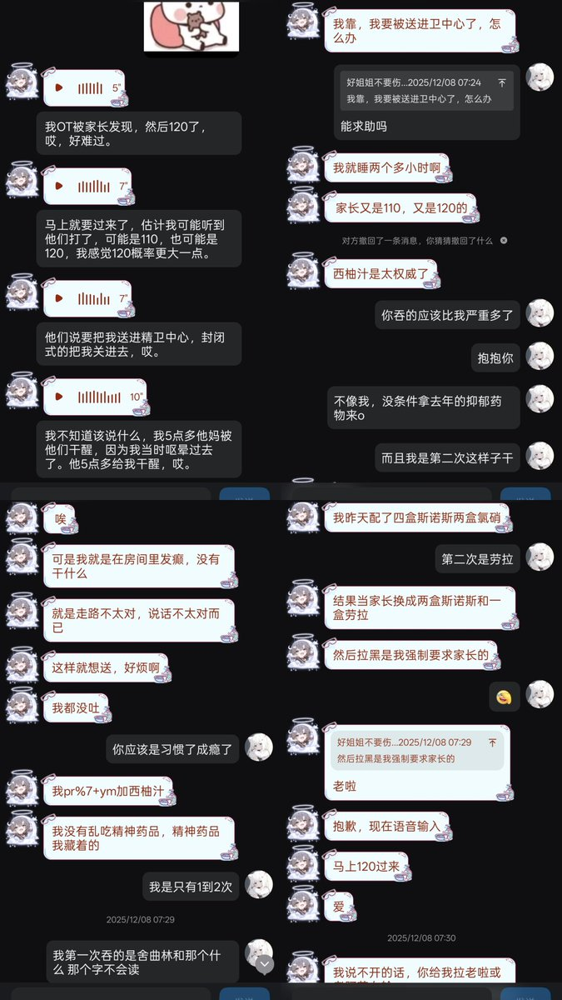
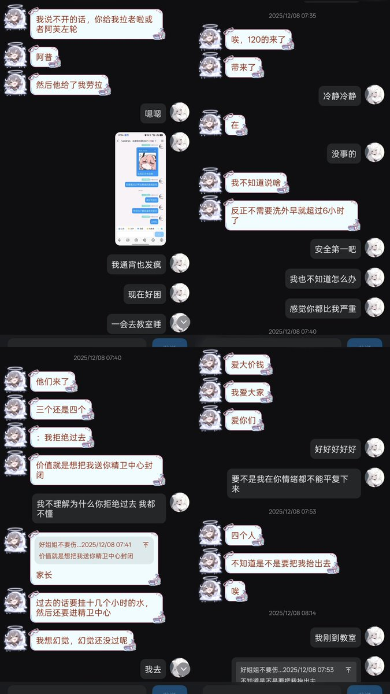
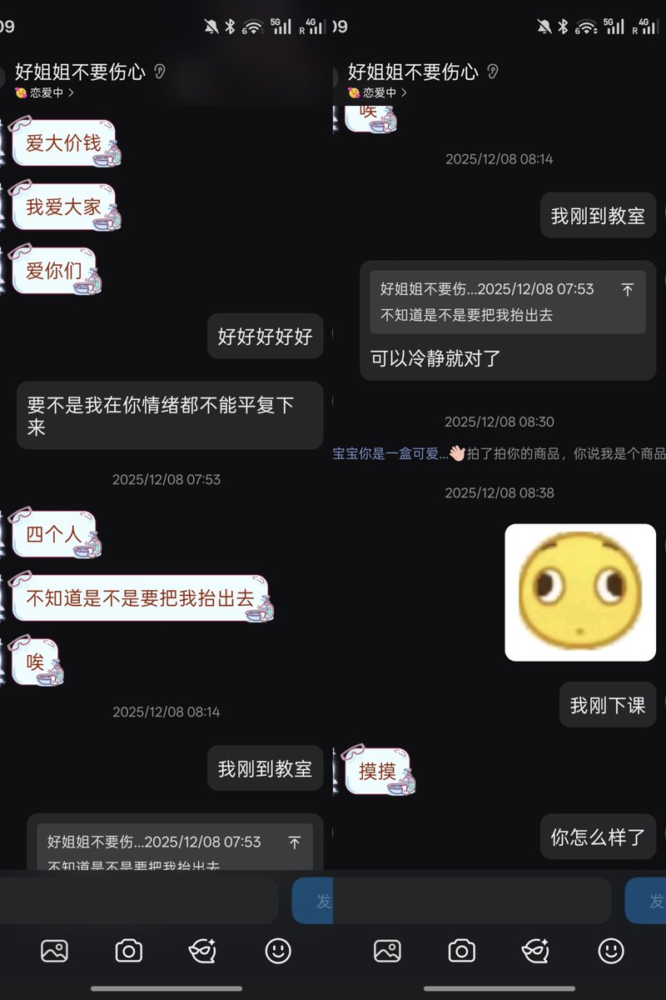

@QXY_WARD @bdxiaoxiong @HhhHhh1668446 跟她认识许久 无数次救她于危难中 我没有想到这一次这么突然 那天打出去的电话是她父母的哭声 还有她的一些丑照 可惜终究不复返 留下的只有一段段曾经证明她来过的痕迹……




@bdxiaoxiong @HhhHhh1668446 节哀...
我以前认识这位姐姐，和她聊过。我们是在一个QQ群里认识的，她曾向我倾诉过痛苦，我当时给她发了邓紫棋的演唱会视频，因为我知道歌声和信仰能给人力量。
愿主耶稣接她到天家，不再有痛苦，下辈子能做一个被家人疼爱的可爱女孩 https://t.co/QxkItkNine
我以前认识这位姐姐，和她聊过。我们是在一个QQ群里认识的，她曾向我倾诉过痛苦，我当时给她发了邓紫棋的演唱会视频，因为我知道歌声和信仰能给人力量。
愿主耶稣接她到天家，不再有痛苦，下辈子能做一个被家人疼爱的可爱女孩 https://t.co/QxkItkNine